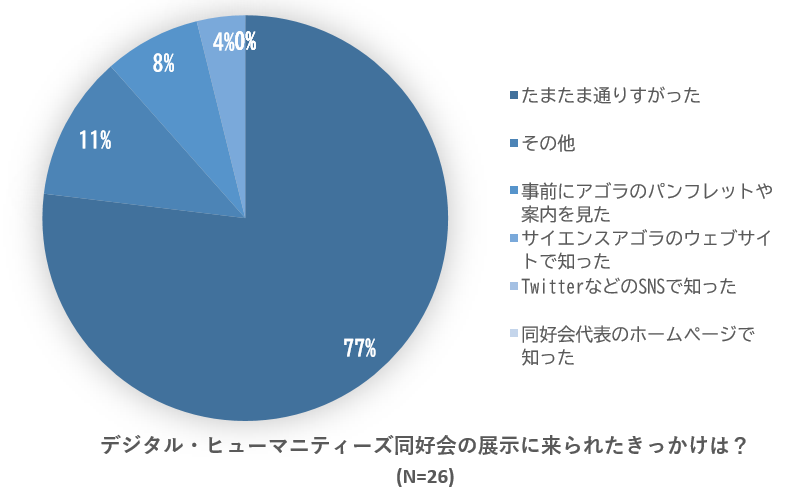
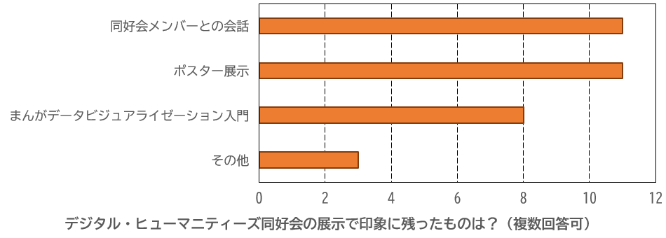
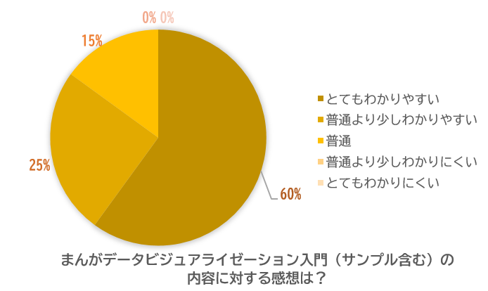
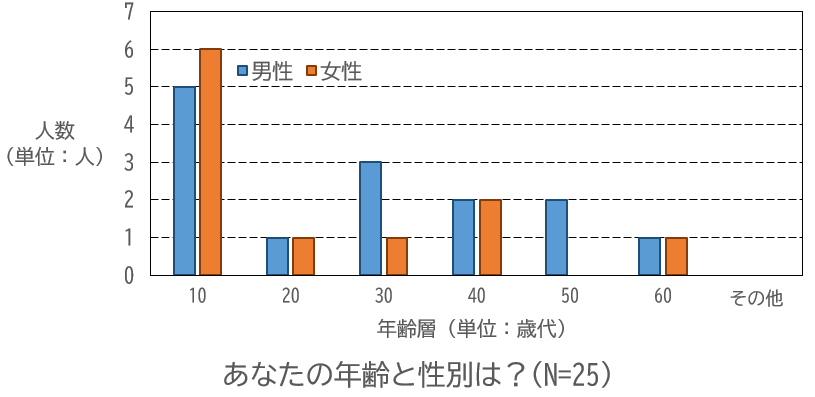
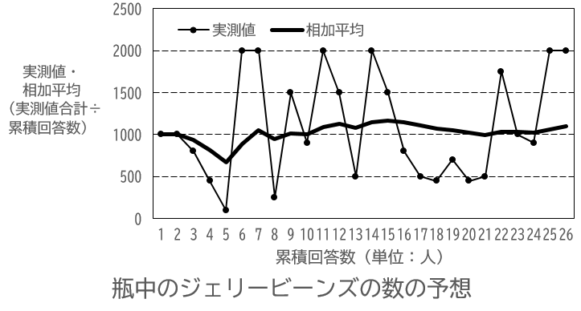
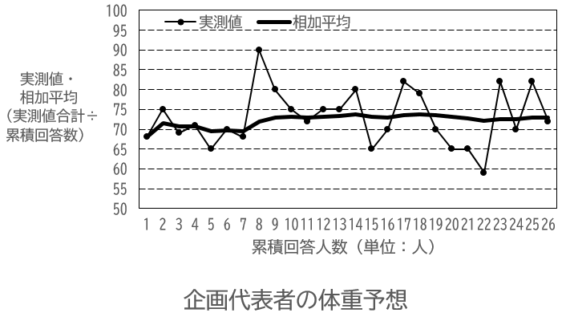

デジタル・ヒューマニティーズ同好会（デジもんず）は，デジタル・ヒューマニティーズ（人文情報学）の勉強・自由研究を自主的に行う市民有志の集まりです．
活動実績
デジタル・ヒューマニティーズ同好会；企画展示「村上春樹とプラトン ～時を越えたつながり～」サイエンスアゴラ2019
[ご注意下さい]
デジもんずは，研究者団体ではありません．「日本デジタル・ヒューマニティーズ学会(JADH)」や「じんもんこん(SIGCH)」といった,正式な学会・団体とは，一切関係ありません.デジもんずの発信する知識や研究成果も，正確とは限りません．ある人がこれらの発信内容を信頼し利用することによって不利益を被っても，デジもんずはその人に対して，一切の責任をもつことができません．ご理解の程お願い申し上げます．
.png "jimoko05")
サイエンスアゴラ公式ホームページ
サイエンスアゴラ2019でのデジもんず紹介ページ
アンケート集計結果（集計期間：2019/11/16-17）（ご回答頂いた皆様，ありがとうございました．）






寄せられた感想（皆様の大変貴重なご感想一つ一つを踏まえ，今後とも精進してまいります．ありがとうございました．）
「丁寧な説明ありがとうございました．」（20歳代男性）
「ご夫婦や友人のコミュニティが素敵でしたし，ほっと癒されました．深く考えられるゆっくりとした時間がいいなと思いました．」（30歳代女性）
「ご夫婦の優しさがとても嬉しくて，心地よくて楽しかったです．人付き合いや学問とは本来はこのようなものなのかなと思いました．」（上と同じ方）
「いろんな研究をされていて，すごく面白いなあと思いました．」（10歳代女性）
「興味深い．注目点が面白かった．」（10歳代女性）
「ミンナツナガッテルヨ～」（60歳代女性）
「小規模でも理論レベルから実用レベルまで色々な形で見せることができると入口が広がってさらに良いと思いました．」（30歳代男性）
「キャラクターがとても可愛いです．」（10歳代女性）
「最先端の研究をされている．広告業とかプロモーションに使えそう．とても興味深い．」（10歳代その他）
「今時の技術はすごいな，としみじみ思います．」（40歳代女性）
「個人的な印象で申し訳ございませんが，まんがに文字が多いような気がします．」（20歳代女性）
>>>代表者より「まんがに文字が多いとのご指摘，ありがとうございます．たしかに仰られる通り，今回のまんがは文字数が多く，可読性に改善の余地があると思われます．他にも，縦書きと横書きが混ざっていて読みにくい，と言って下さる方もいらっしゃいました．今後の刊行の場面において配慮させて頂きます．ありがとうございました．」
「これからもこのような活動を期待いたします．」（50歳代その他）
「とても分かりやすく説明して下さり，ありがとうございます．」（10歳代男性）
その他，ご意見ご感想ございましたら，TwitterのDMやEmailより，代表者（小髙）までお問い合わせ下さいませ．
Twitter：[ａｔ]ＮＩＩ９０７９５２８０
Email：ｈａｒｕｔｏｓｙｕｒａ［ａｔ］ｉ．ｓｏｆｔｂａｎｋ．ｊｐ